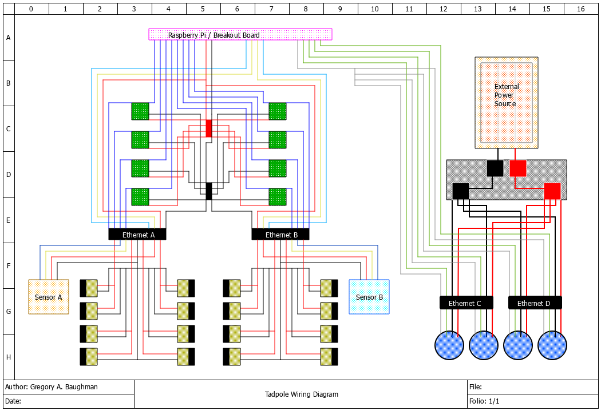

For the second semester of my senior capstone project, my group was tasked with creating
a neutral buoyancy craft capable of docking with an external structure as well as investigating and
photographing an object underwater. Our craft is designed to navigate using four underwater thrusters that
manage depth and pitch control. Sixteen solenoids, arranged in eight pairs of two, handle in-plane translation
and rotation.
Above is the design for the Design Test Unit (DTU) electrical system that I designed for our initial design
presentation. We were limited to four 8-pin cables for our craft, which are split into two for the motor
controls and two for the solenoids and sensors. The motor system runs on 12 volts and is separate from the
5-volt solenoid system. The solenoids are wired to a breadboard with power switches connected to a Raspberry Pi,
while the motors are connected to a power distribution board, with the signal wires running to the Raspberry Pi.
Our DTU control system is designed to connect with three underwater cameras in the neutral buoyancy tank as well
as one fishing camera on our craft. Our software will use computer vision through OpenCV to detect points on the
submersible and determine its position. The fishing camera will be used during docking to detect points on our
docking system and determine the necessary control inputs to properly align the craft with the docking station.
The systems will be finalized during the build process, where they will all be tested together.